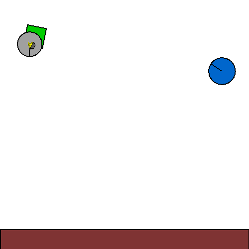
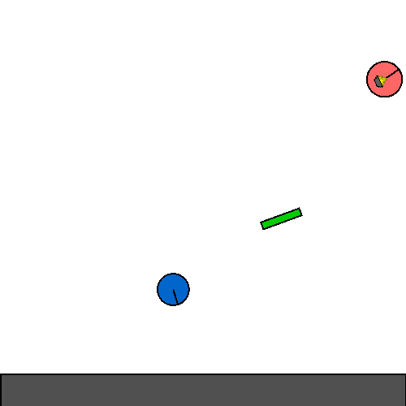
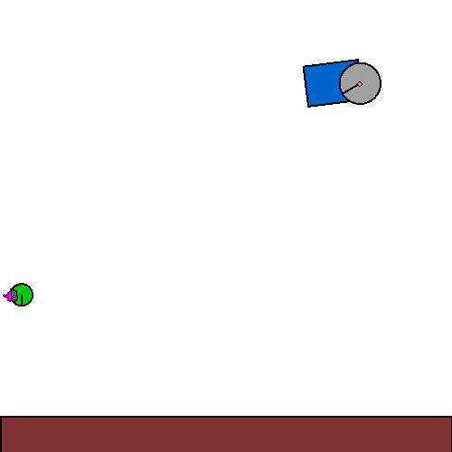
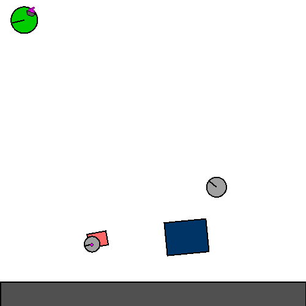
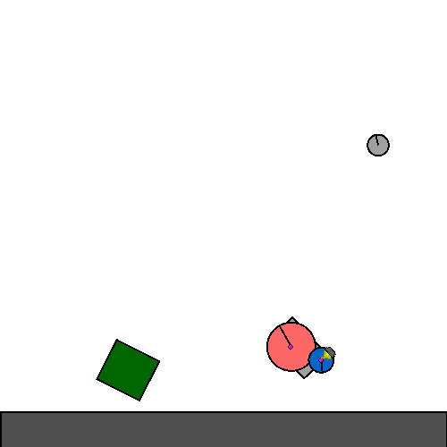
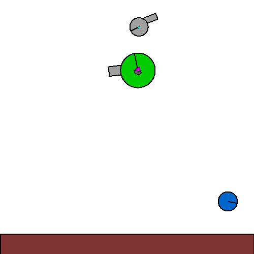
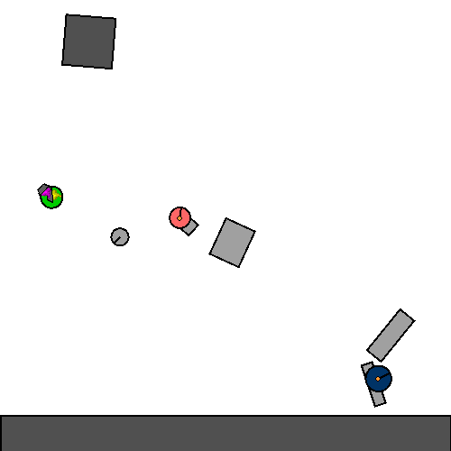
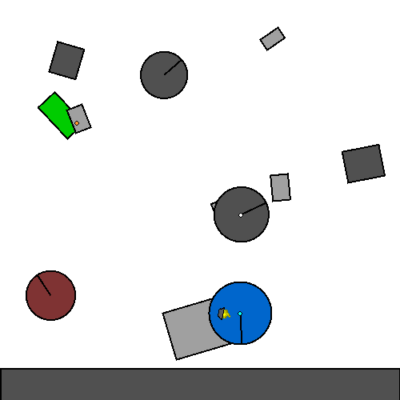
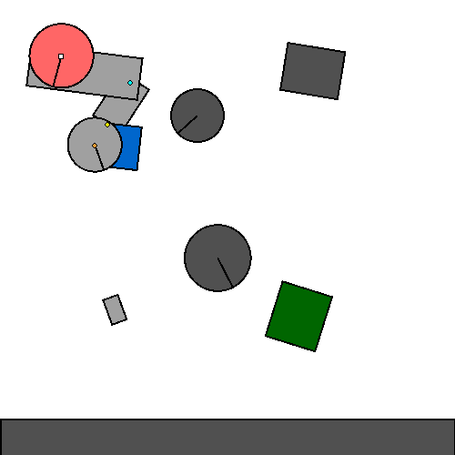

A massive dataset of expert trajectories in over 10M unique tasks
Current generalist agents are inevitably pre-trained on massive datasets spanning a wide range of tasks, and then perhaps fine-tuned online using RL. Existing offline datasets tend to cover tens to hundreds of tasks, with a notable exception being XLand-100B, which contains full learning trajectories from 30000 tasks. We instead focus on task diversity and release a large-scale offline dataset for open-ended physics-based control that contains 3 billion transitions across 11 million unique environments.
Kinetix is a JAX-based physics engine where tasks are procedurally generated 2D rigid-body control problems. We generated this dataset by training per-level specialist policies using PPO, and collecting trajectories from each policy. Only trajectories from solvable levels where the expert succeeded are included.
We have a few different available datasets. These are split by environment size (how many entities are there in a scene) and for how long the experts were trained for.



m


l


Unique Levels is the number of distinct levels for which trajectories were collected; Transitions is the total number of individual environment steps across all trajectories.
| Expert Training Time | Size | Unique Levels | Transitions |
|---|---|---|---|
1M |
s |
6M | 1.5B |
1M |
m |
3.5M | 884M |
1M |
l |
1M | 268M |
10M |
s |
637k | 163M |
10M |
m |
422k | 108M |
| Total | 11M | 3B |
One benefit of Kinetix is that we can specify the rendering function dynamically at runtime, meaning that the same data can be used to train symbolic or pixel-based agents.
We've updated the main Kinetix repository to include
ready-to-use data loaders, with a full example contained in examples/example_data_loading.py.
TrajectoryDatasetManager loads complete episodes.
Each batch has shape (batch_size, T, *dims), with the full env_state included
so you can re-render observations on-the-fly in any observation modality.
A full offline BC training script is provided in experiments/offline_bc.py. Run it as follows, or modify as needed.
We release 3B expert transitions across 11M unique levels in Kinetix, along with data loaders and a full BC training pipeline. We hope this enables future research into generalist agents, large-scale BC, or world models.
This is based on the Distill Template and the ACCEL Blog. This work was provided by the Isambard-AI National AI Research Resource, under the project "FLAIR 2025 Moonshot Projects". Thank you to Alex Goldie for useful discussions.